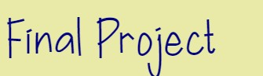

|
 |
 |
 |
The game that we created was basically a spin off flappy bird. The purpose of the game is the same.
The purpose of the game is to avoid the pipes and try getting a higher score.
The way to play is by using the Spacebar which is joing to make the character hop.
The game speeds up once a certain score is reached. The higghest score that is possible to reach in the game is 100.
Overall the game isn't meant to as challenging to user.